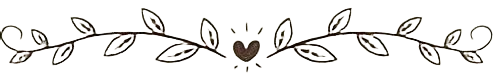

Maze in the Mirror | The Dream Chapter: Eternity (2020)
Fun Fact Tentang Choi Beomgyu

- Beomgyu berasal dari Buk District, Daegu, Korea Selatan
- Julukannya adalah "Bamgyu" dan "Cookie"
- Suka makan tteokbokki bersama eomuk
- Beomgyu juga suka garlic bread
- Buah favoritnya adalah strawberry dan mangga
- Punya lesung pipi
- Warna favoritnya pink sampai punya banyak pakaian berwarna senada
- Beomgyu bisa bermain gitar akustik dan elektrik

- Gitar pertamanya dibelikan oleh sang ayah saat mereka berkunjung ke Manila, Filipina
- Jago berbahasa Inggris
- Simbol Beomgyu dalam video perkenalannya adalah kupu-kupu dan bunga poppy
- Punya burung beo bernama Toto
- Beomgyu adalah penggemar BTS
- Hobi barunya adalah fotografi dengan kamera polaroid
- Beomgyu adalah mood maker di grup
- Menurut Yeonjun, Beomgyu punya mata yang indah
Musik yang dibuat oleh Beomgyu
No Rules" | The Chaos Chapter: Freeze (2021)
Balance Game" | The Chaos Chapter: Freeze (2021)
MOA Diary" | The Chaos Chapter: FIGHT OR ESCAPE (2021)